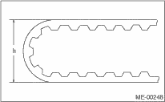
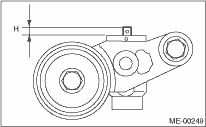

MECHANICAL(H4SO) > Timing Belt
1. Check the timing belt teeth for breaks, cracks or wear. If any fault is found, replace the belt.
2. Check the condition of the back surface of belt. If cracks are found, replace the belt.
CAUTION:
• Be careful not to let oil, grease or coolant come into contact with the belt. Remove quickly and thoroughly if this happens.
• Do not bend the timing belt sharply.
In radial diameter h:
60 mm (2.36 in) or more

2. AUTOMATIC BELT TENSION ADJUSTER
1. Visually check the oil seals for leaks, and rod ends for abnormal wear and scratches. If necessary, replace the automatic belt tension adjuster assembly.
NOTE:
Slight traces of oil on the rod oil seal does not indicate a problem.
2. Check that the adjuster rod does not move when a pressure of 294 N (30 kgf, 66 lbf) is applied to it. This is to check the adjuster rod stiffness.
3. If the adjuster rod is not stiff and moves freely when applying 294 N (30 kgf, 66 lbf), check it using the following procedures:
(1) Slowly press the adjuster rod down to the end surface of cylinder. Repeat this operation two to three times.
(2) With the adjuster rod moved all the way up, apply a pressure of 294 N (30 kgf, 66 lbf) to it. Check the adjuster rod for movement.
(3) If the adjuster rod is not stiff and moves down, replace the automatic belt tension adjuster assembly with a new part.
CAUTION:
• Always use a vertical type pressing tool to move the adjuster rod down.
• Do not use a lateral type vise.
• Push the adjuster rod vertically.
• Press the adjuster rod gradually taking three minutes or more.
• Do not allow press pressure to exceed 9,807 N (1,000 kgf, 2,205 lbf).
• Press the adjuster rod as far as the end surface of the cylinder. Do not press the adjuster rod into cylinder. Doing so may damage the cylinder.
4. Measure the protrusion (H) of the rod from the end face of body. If it is not within specified range, replace with new part.
Rod protrusion amount H:
5.2 — 6.2 mm (0.205 — 0.244 in)

1. Check the mating surfaces of timing belt and contact point of adjuster rod for abnormal wear or scratches. Replace the automatic belt tension adjuster assembly if faulty.
2. Check the belt tension pulley for smooth rotation. Replace if noise or excessive play occurs.
3. Check the belt tension pulley for grease leakage.
1. Check the belt idler for smooth rotation. Replace if noise or excessive play occurs.
2. Check the outer contacting surfaces of idler pulley for abnormal wear and scratches.
3. Check the belt idler for grease leakage.